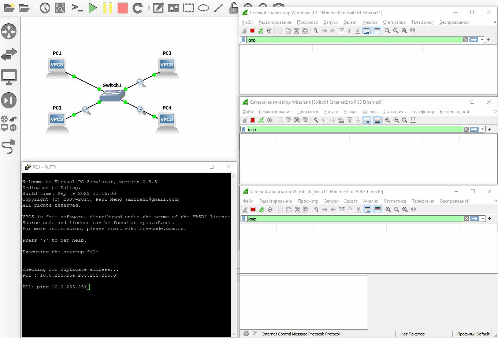
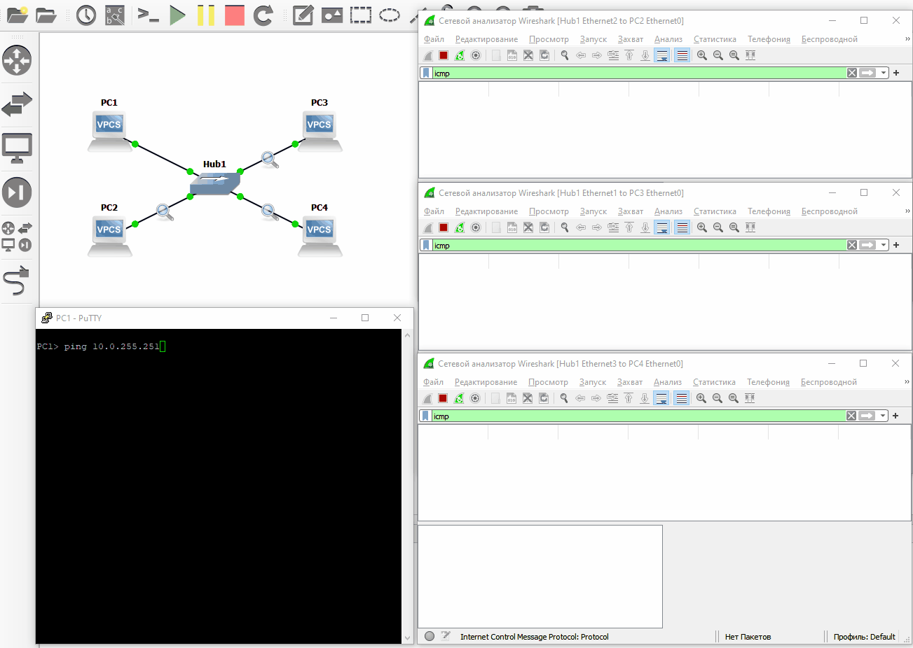

Коммутатор
Что такое коммутатор (switch)
Поскольку у большинства конечных устройств только один сетевой интерфейс, то соединить в одну сеть можно только 2 устройства. Обычно нужно объединить несколько устройств в одну сеть, поэтому для этого используют коммутатор.
Концентратор
Раньше для этих же целей использовался концентратор, но в силу отсутствия какой-либо гибкости в настройках (да и вообще отсутствия возможности конфигурирования) более не используется (или не рекомендуется к использованию).
Схема
flowchart LR
PC1 o--o Switch o--o PC3
PC2 o--o Switch o--o PC4Необходимые устройства:
- Встроенный в GNS3 коммутатор
- Встроенный в GNS3 VPCS
Используется сеть 10.0.0.0/16.
Встроенный в GNS3 коммутатор
В GNS3 есть встроенный коммутатор, который имеет минимальный функционал, который вдальнейшем ипользоваться нами не будет. Вместо него будет использоваться более или менее полноценный управляемый коммутатор. Но для достижения поставленной цели его достаточно.
Выбор адресов
На схеме 4 ПК, которым нужно назначить адреса. Для этого будут использованы 4 последних IP-адреса (за исключением служебного):
- Исходная сеть -
10.0.0.0/16 - Поскольку длина маски - 16, то для хостов свободны последние 2 октета.
- Адрес
10.0.255.255- служебный - PC1 -
10.0.255.254/16 - PC2 -
10.0.255.253/16 - PC3 -
10.0.255.252/16 - PC4 -
10.0.255.251/16
Коммутатору пока что адрес не нужен, хотя управляемому коммутатору можно выдать свой IP-адрес, но в данной теме это не требуется.
Схему с IP-адресами можно нарисовать следующим образом
flowchart LR
Net{{10.0.0.0/16}}
PC1[PC1<br>.254]
PC2[PC2<br>.253]
PC3[PC3<br>.252]
PC4[PC4<br>.251]
PC1 o--o Net o--o PC3
PC2 o--o Net o--o PC4Настройка
На устройствах выполнить следующие команды (можно копировать, но по одной строке, т.к. сразу несколько VPCS может не обработать).
ip 10.0.255.254/16
save
ip 10.0.255.253/16
save
ip 10.0.255.252/16
save
ip 10.0.255.251/16
save
Проверка
Чтобы проверить корректность настройки можно воспользоваться командой ping на любом из устройств и проверить доступность остальных устройств.

Проверка осуществлена с PC1 на PC4. Результат в консоли показал, что устройство доступно.
Также был выполнен захват трафика на 3 сегментах сети. ICMP-трафик прошел только в одном окне. Во всех окнах появился еще трафик протокола ARP, но пока не обращаем на него внимание.
Сообщения ICMP в Wireshark
На данный момент про ICMP достаточно знать то, что такой трафик генерируется, когда выполняется проверка доступности устройств с помощью ping:
- Эхо-запрос - отправляет устройство, где выполняется
ping, другому устройству, чей IP-адрес был указан - Эхо-ответ - отправляется в ответ, если такое устройство найдено и оно может ответить
Что будет, если вместо коммутатора спользовать концентратор
Концентратор - предшественник коммутатора. Очень примитивное устройство, которое на данный момент вряд ли можно встретить в реальных сетях, но GNS3 оно есть, и с ним можно "поиграть".
Если вместо коммутатора на схеме поставить концентратор и также захватить трафик, то наглядно будет видна основная разница в работе этих двух устройств

Теперь ICMP-трафик появился во всех окнах Wireshark.
Концентратор отправляет данные без разбора на все активные интерфейсы, что приводит к необоснованной нагрузке во всех подключенных к нему сегментах и обработке трафика там, где его не ждут. Коммутатор в свою очередь пытается отправлять данные только туда, где их могут ждать.
Linux-коммутатор
см. документацию
ü߆ –°–∞–º–æ—Å—Ç–æ—è—Ç–µ–ª—å–Ω–∞—è —Ä–∞–±–æ—Ç–∞
Построить и настроить следующую схему
flowchart TB
Net{{10.❔.0.0/16}}
PC1[PC1<br>наименьший адрес в сети]
PC2[PC2<br>1000-ый по счету]
PC3[PC3<br>наибольший адрес в сети]
PC1 o--o Net
PC2 o--o Net
PC3 o--o Netü§î –ö–æ–Ω—Ç—Ä–æ–ª—å–Ω—ã–µ –≤–æ–ø—Ä–æ—Å—ã
- Сколько еще ПК можно еще подключить в такую схему?
- С учетом количества свободных портов на коммутаторах
- Без учета количества свободных портов на коммутаторах
- Если бы у коммутаторов было неограниченное количество портов, то сколько максимум ПК можно было бы к ним подключить, чтобы все они оказались в одной сети? Если перефразировать: сколько хостов может быть в указанной сети?
- Будут ли доступны друг другу ПК?
Используя данный сайт и его ресурсы, вы соглашаетесь с политикой и соглашениями сайта.
©️ Оформление, изложение, медиаматериалы. И. Попов, 2020-2025
Сделано с помощью Material for MkDocs.